Система контролю версій. Зберігає історію змін коду.
МІСІЯ 03 · МОДУЛЬ I
Мій проєкт виходить онлайн
Твій HTML/CSS уже готовий. Час розмістити сайт на GitHub, опублікувати його та навчитися керувати змінами через VS Code.
Учителю: демонструйте всі кроки на окремому репозиторії
canteen-demo. Учні повторюють їх зі своїми сайтами. Перед уроком перевірте наявність Git, доступ до GitHub, можливість увімкнути Pages і мережевий доступ. Якщо GitHub Pages недоступний через налаштування акаунта чи організації, не вимагайте від учнів обхідних дій: зафіксуйте обмеження і погодьте альтернативний спосіб публікації.ЕТАП 1 / 6 · 10 хв
Як працює професійний цикл
Відрізняємо Git, GitHub, VS Code та GitHub Pages.
Пояснення вчителя · 4 поняття
Віддалений сервіс для розміщення Git-репозиторіїв.
Редактор, у якому змінюємо локальні файли та працюємо з Git.
Публікує статичний сайт із репозиторію.
VS Code → Commit → Push → GitHub → Pages → Браузер
Учитель демонструє на проєкті «Шкільна їдальня» з Місії 02. Учень працює зі своїм HTML/CSS-проєктом.
Швидка перевірка розуміння
Підготовка
ЕТАП 2 / 6 · 15 хв
Розміщую власний проєкт
Створюємо репозиторій і переносимо до нього вже готовий код.
Учитель показує · «Шкільна їдальня»
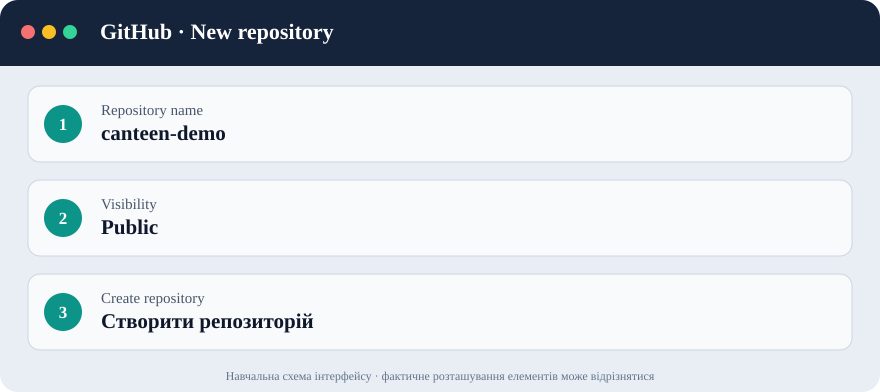
- На GitHub натисніть New repository (або + → New repository).
- Назвіть його
canteen-demo, виберіть Public. Не додавайте README на цьому етапі, якщо завантажуєте готові файли. - Натисніть Create repository.
- На сторінці порожнього репозиторію натисніть uploading an existing file (або Add file → Upload files).
- Перетягніть вміст папки їдальні:
index.html,css/,js/, потрібні зображення. - Введіть опис коміту
Initial website versionі підтвердьте Commit changes.
Для учнів: використовуйте назву власного проєкту. Репозиторій Public означає, що код буде доступний іншим. Не завантажуйте персональні дані, паролі, токени або приватні матеріали.
Де вводити повідомлення першого коміту
На GitHub у вікні Commit changes повідомлення вводять у верхнє однорядкове поле (за замовчуванням «Add files via upload»). Велике поле опису нижче необов'язкове.
Приклад повідомлення: Initial commit: canteen demo. Натисніть зелену кнопку Commit changes.
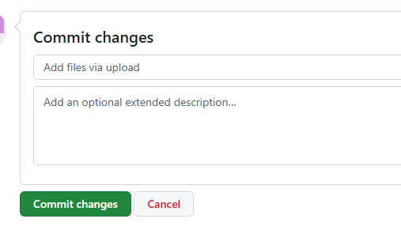
Перевіряю структуру
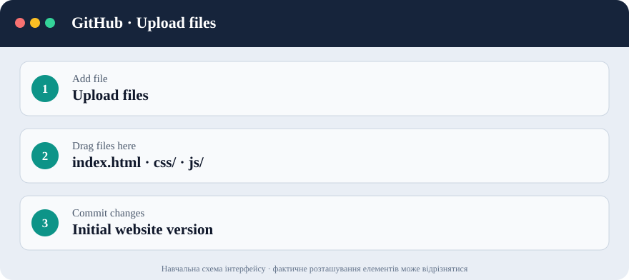
my-project/
├── index.html
├── css/
│ └── style.css
├── js/
│ └── app.js (якщо вже є)
└── assets/ (за потреби)
├── index.html
├── css/
│ └── style.css
├── js/
│ └── app.js (якщо вже є)
└── assets/ (за потреби)
Важливо: для публікації з кореня репозиторію файл index.html має лежати в корені, а не в зайвій вкладеній папці.
ЕТАП 3 / 6 · 15 хв
Публікую через GitHub Pages
Робимо сторінку доступною за вебадресою.
Демонстрація вчителя · 7 кроків
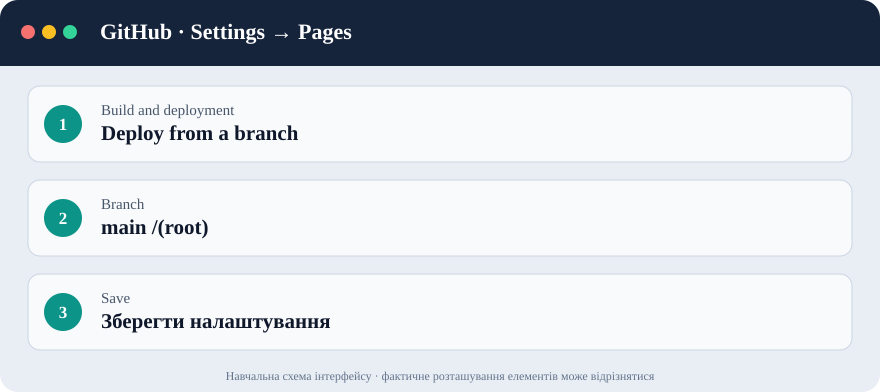
- У репозиторії відкрийте Settings → Pages.
- У розділі Build and deployment виберіть Deploy from a branch.
- Виберіть гілку main і папку /(root).
- Натисніть Save.
- Зачекайте завершення публікації; статус можна перевірити у Actions.
- Поверніться до Settings → Pages та відкрийте посилання на сайт.
- Перевірте головну сторінку, стилі, зображення, кнопки й переходи.
Типова адреса: https://username.github.io/repository-name/. Вона залежить від власника та назви репозиторію.
Проблема: сторінка без стилів?
Перевірте регістр літер у назвах файлів і відносні шляхи. Для проєктного GitHub Pages краще використовувати css/style.css, а не /css/style.css: шлях із початковим слешем шукає файл у корені домену.
Працює у папці проєкту
<link href="css/style.css" rel="stylesheet">Може зламатися
<link href="/css/style.css" rel="stylesheet">Доказ публікації
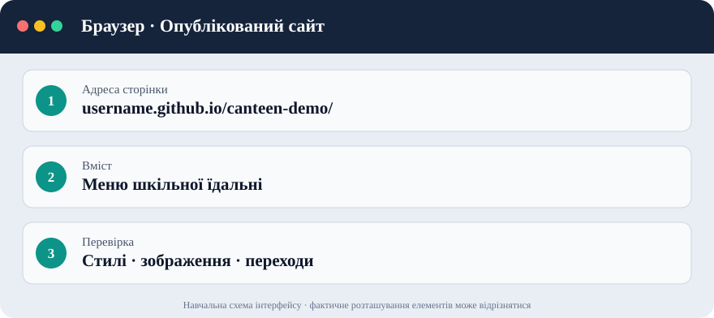
ЕТАП 4 / 6 · 15 хв
Підключаю репозиторій до VS Code
Тепер редагуватимемо проєкт локально й надсилатимемо зміни на GitHub.
Клонування · Windows і macOS
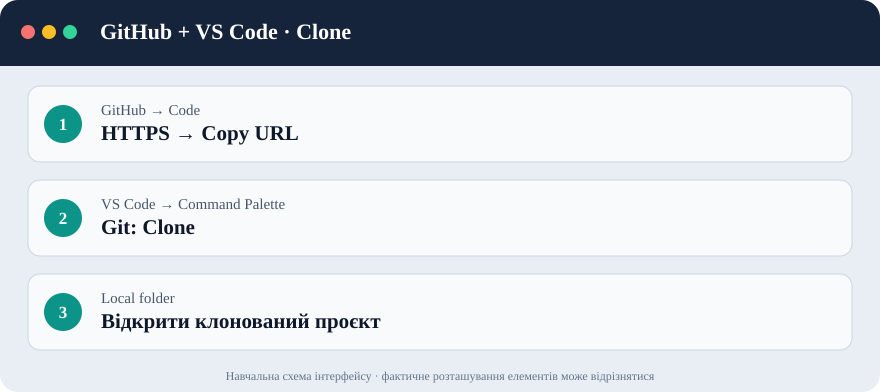
- Переконайтеся, що встановлено Git та Visual Studio Code. Перевірка в терміналі:
git --version. - На GitHub у своєму репозиторії натисніть Code → HTTPS і скопіюйте адресу клонування.
- У VS Code відкрийте Source Control → Clone Repository або Ctrl+Shift+P (Windows) / Cmd+Shift+P (macOS) → Git: Clone.
- Вставте HTTPS-адресу та виберіть папку для збереження.
- Відкрийте клонований проєкт у VS Code та підтвердьте довіру до папки, якщо це ваш власний код.
- Перевірте, що у Source Control відображається репозиторій, а в Explorer — файли сайту.
Не редагуйте після клонування стару папку, з якої раніше завантажували файли через браузер. Працюйте саме в клонованій папці.
Після Clone: відкрийте саме клонований репозиторій
Якщо з'явилося «Would you like to open the repository?» — натисніть Open. Стару папку, з якої завантажували файли через браузер, більше не редагуємо.
Якщо VS Code просить довіряти авторам, підтверджуйте довіру лише до власного або перевіреного проєкту.
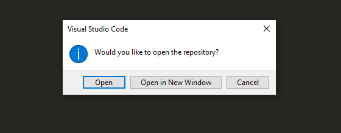
Source Control не працює: Restricted Mode
Повідомлення «None of the registered source control providers work in Restricted Mode» означає, що папка відкрита в обмеженому режимі.
Натисніть Manage Workspace Trust → Trust, якщо це ваш власний репозиторій. Після перезавантаження перевірте Source Control (Ctrl+Shift+G).
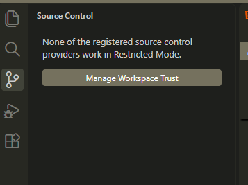
Якщо VS Code не бачить Git
Встановіть Git з офіційного джерела, перезапустіть VS Code і перевірте git --version. Для авторизації під час Push дотримуйтеся підказок VS Code/GitHub; пароль GitHub не вводиться як звичайний Git-пароль.
Windows: Ctrl+Shift+P. macOS: Cmd+Shift+P. Команда Git: Clone однакова.
Перевіряю
ЕТАП 5 / 6 · 25 хв
Редагую → Commit → Push → перевіряю
Проходимо перший повний цикл оновлення опублікованого сайту.
Демонстрація вчителя на їдальні
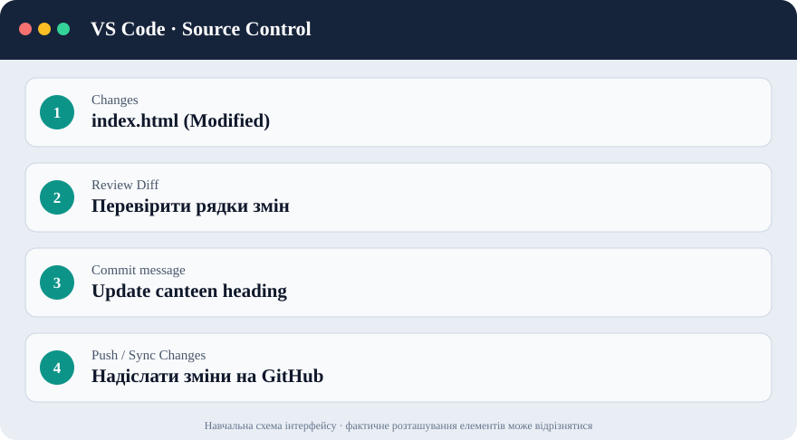
- У VS Code відкрийте
index.htmlклонованого репозиторіюcanteen-demo. - Змініть видимий заголовок, наприклад «Меню шкільної їдальні» на «Меню шкільної їдальні · оновлено».
- Збережіть файл (Ctrl+S / Cmd+S).
- У Source Control перегляньте Diff: що саме змінилося?
- Натисніть Stage Changes (+), введіть осмислене повідомлення
Update canteen page headingі натисніть Commit. - Виконайте Push або Sync Changes. Якщо VS Code запропонує авторизацію, завершіть її.
- Перевірте новий коміт на GitHub, дочекайтеся завершення Pages deployment.
- Оновіть опублікований сайт у браузері й переконайтеся, що заголовок змінився.
Попередження про українські символи — не помилка
Повідомлення «This document contains many non-basic ASCII unicode characters» пов'язане з підсвічуванням Unicode. Українські літери в HTML допустимі; не видаляйте їх і не змінюйте кодування через це попередження.
Перевірте, що файл збережений у UTF-8, а документ має lang="uk". Далі змінюйте тільки текст потрібного заголовка.
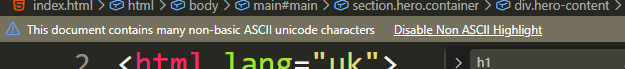
Commit не створюється: налаштуйте автора Git
Якщо бачите «Make sure you configure your user.name and user.email in git», Git ще не має даних автора на цьому комп'ютері.
Відкрийте Terminal → New Terminal у клонованому репозиторії. Вкажіть власне ім'я та підтверджену в GitHub email-адресу або GitHub noreply-адресу. Не публікуйте приватну адресу в навчальних скриншотах.
Ці команди без --global діють лише для поточного репозиторію. Потім повторіть Commit.
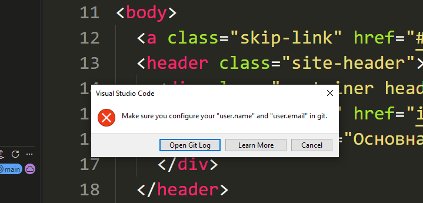
git config user.name "Ваше ім’я" git config user.email "ваша-адреса@example.com" git config user.name git config user.email
Як відрізнити Commit від Push
Після локального коміту в Source Control може з'явитися «Sync Changes 1↑». Стрілка вгору означає один коміт, який очікує надсилання.
Перегляньте граф: main вказує на новий коміт, а origin/main ще на попередній. Натисніть Sync Changes, щоб синхронізувати репозиторій.
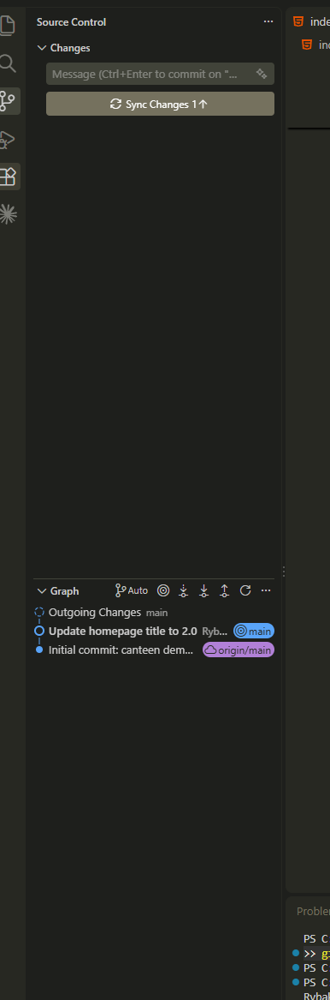
Підтвердження Sync Changes
Діалог «This action will pull and push commits from and to origin/main» пояснює, що VS Code отримає віддалені зміни та надішле локальні коміти.
Натисніть OK. Якщо Git повідомить про конфлікт або помилку авторизації, не повторюйте синхронізацію навмання — прочитайте повідомлення.
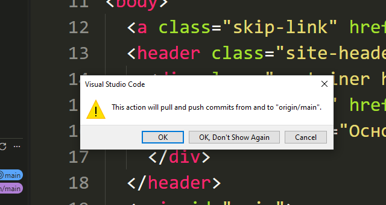
Дозвіл на Git Fetch
Питання «Would you like Visual Studio Code to periodically run git fetch?» — не помилка. Для навчання можна натиснути Yes.
Fetch перевіряє та отримує інформацію про віддалені коміти, але не змінює робочі файли й не публікує сайт.
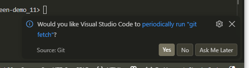
Перевірка після синхронізації
Після успішного Push позначка 1↑ зникає, а main і origin/main вказують на той самий коміт.
Далі перевірте GitHub Actions / Pages, дочекайтеся завершення розгортання, оновіть сторінку браузера (Ctrl+F5 на Windows) і переконайтеся, що заголовок змінився, а меню працює.
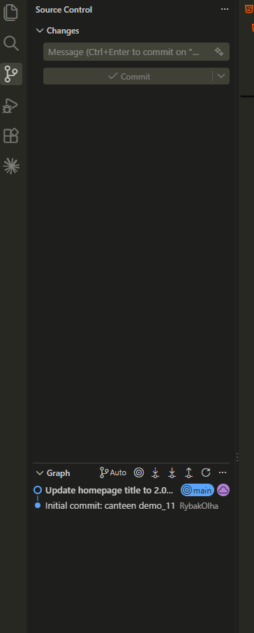
Що відбувається на кожному кроці?
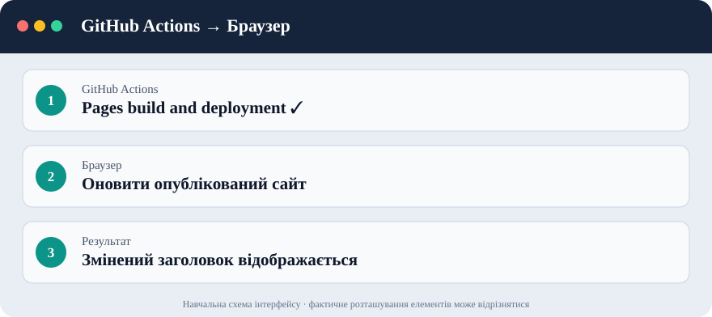
Зберігає файл на комп’ютері.
Фіксує стан змін у локальній історії Git.
Надсилає коміти на GitHub.
GitHub Pages оновлює опублікований сайт.
Тепер твоя черга
Я працюю з власним HTML/CSS-проєктом у VS Code. Поясни, як перевірити зміни у Source Control перед комітом, і запропонуй коротке повідомлення коміту. Не змінюй файли автоматично.
ЕТАП 6 / 6 · 10 хв
Завершення місії
Підсумовуємо, документуємо результати та плануємо наступну роботу.
Мій результат
Журнал технічних рішень
Зафіксуйте хоча б одне рішення: що зробили, чому та як перевірили.
Самооцінювання · 12 балів
Разом: 0 / 12
Експорт для Moodle та резервна копія
Завантажте JSON для продовження роботи в наступній місії та Markdown для звіту. Дані зберігаються лише у цьому браузері; на іншому пристрої потрібен імпорт JSON.
Домашнє завдання
Перевірте сайт на комп’ютері та телефоні, усуньте одну знайдену проблему або внесіть невелике покращення. Зробіть окремий коміт, Push і перевірте оновлення. Підготуйте ідею першої JavaScript-функції для Місії 04.